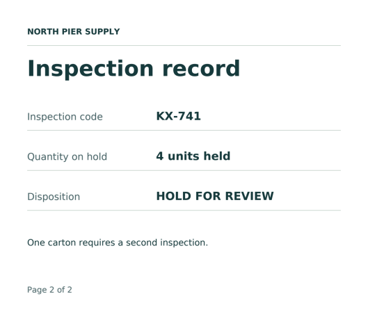

A minus sign drawn as a line
Both exports turn a stock adjustment of −18 into 18. OCR also misses the sign in this example.
Inspect the missing sign →Five small documents show how text, signs and page boundaries can disappear before a document reaches a model. Inspect the original page beside two real extraction results.
The inspection code, the quantity on hold and the decision are visible in the scan. Only its footer appears in the text layer.
Text layer 2/5 · With OCR 5/5
Compare the two extractions →
Both exports turn a stock adjustment of −18 into 18. OCR also misses the sign in this example.
Inspect the missing sign →The word EXPRESS is made of vector paths. The text layer drops it and OCR recovers it.
Inspect the shipping label →Each dock name and each pallet count survives, but the raw reading order separates them. Layout-preserving extraction recovers all three pairs.
Compare the reading orders →Both batch codes survive. Removing the page breaks makes it impossible to verify which physical page contains each code.
Inspect the page boundaries →